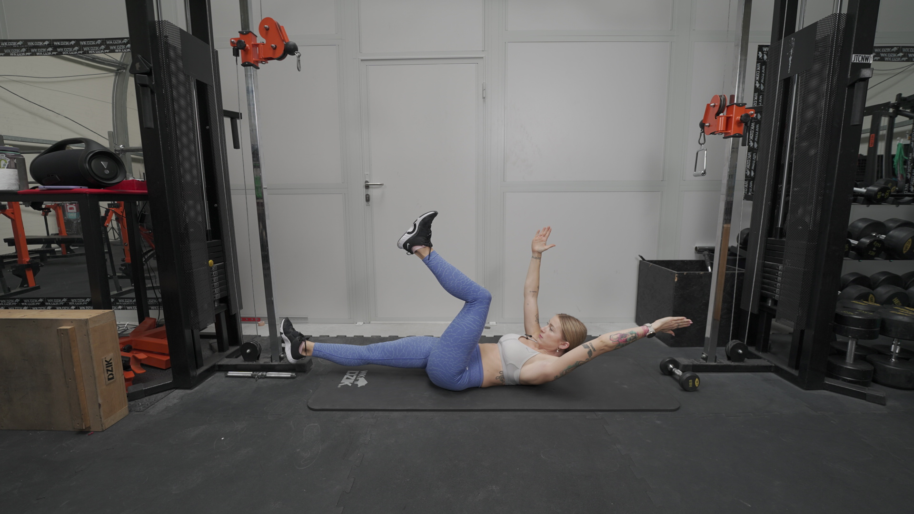
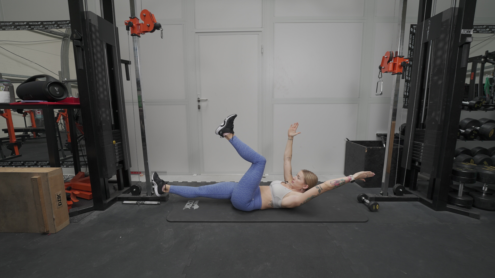

DEAD BUG
 

1. Połóż się na plecach, na macie treningowej. Ręce unieś nad głowę (aby nadgarstek, łokieć i bark tworzyły prostą linię).
2. Ugięte kolana unieść nad matę, aby w kolanie pojawił się mniej więcej kąt 90 stopni.
3. Oderwij od podłoża głowę oraz górną część pleców, osiągając duże napięcie brzucha.
4. Wykonaj jednoczesny ruch wyprostu lewej nogi i obniżenia jej pozycji oraz przeniesienia prawej, wyprostowanej ręki za głowę.
5. Utrzymując spięty brzuch, wróć do pozycji startowej i powtórz to samo drugą nogą i drugą ręką.